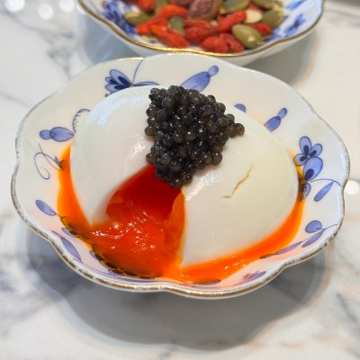
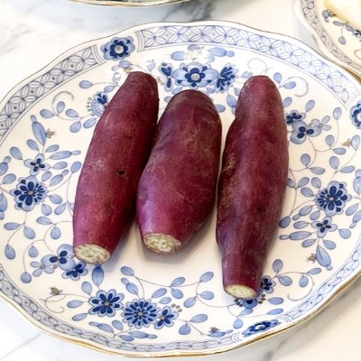
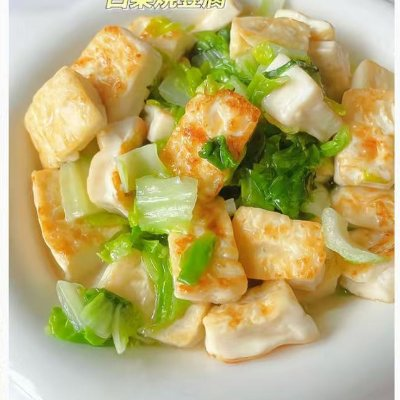
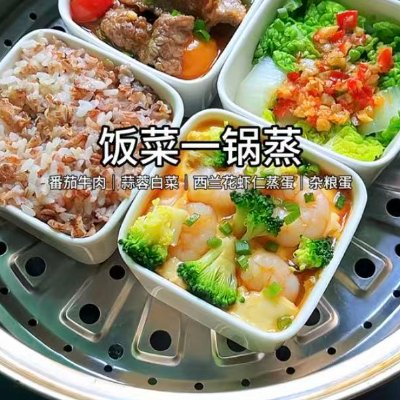
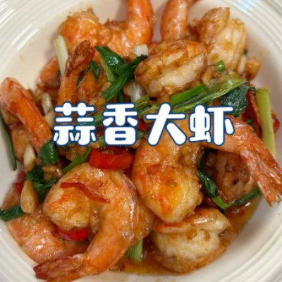
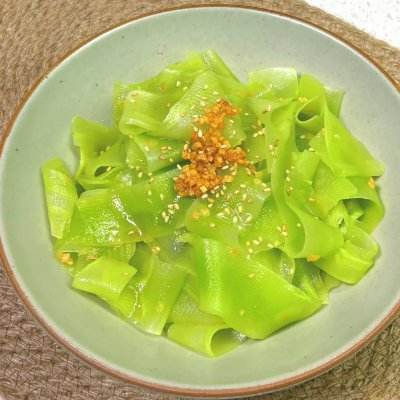

🌅 早餐 Breakfast



鱼子酱溏心蛋 ＋ 香港红薯 ＋ 白菜烧豆腐
Soft-Boiled Egg with Caviar + Hong Kong Sweet Potato + Braised Tofu with Chinese Cabbage
☀️ 午餐 Lunch
肉末空心菜 ＋ 16谷粗粮饭（加新鲜莲子粒） ＋ 开胃萝卜丝
Minced Meat Water Spinach + 16-Grain Rice (with Fresh Lotus Seeds) + Appetizer Shredded Radish
🍵 下午茶/加餐 Afternoon Snack
无糖酸奶（生冷） ＋ 麦冬大麦茶
Sugar-free Yogurt (Cold) + Ophiopogon & Barley Tea
🌙 晚餐 Dinner



松茸竹荪菌菇鸡汤 ＋ 饭菜一锅蒸 ＋ 蒜香虾 ＋ 温拌莴笋片
Chicken Soup with Matsutake, Bamboo Fungus and Mixed Mushrooms + One-Pot Steamed Rice & Dishes + Garlic Shrimp + Warm Tossed Sliced Celtuce
📌 温拌菜必须温热